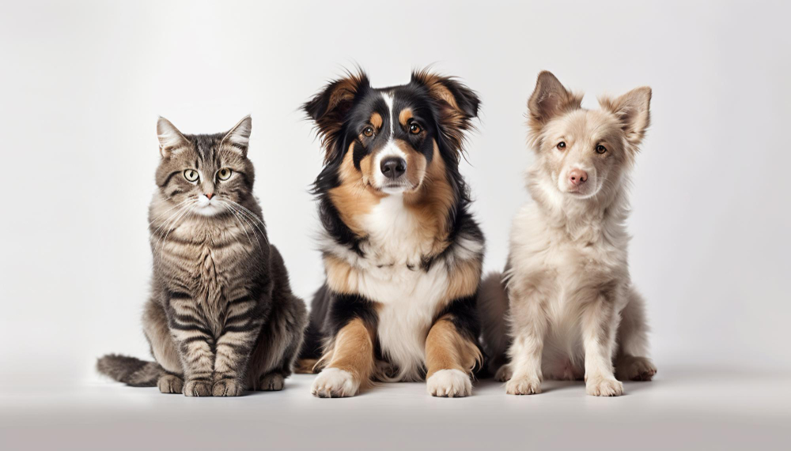

Book with us!
About Us
Pet Patrol is a platform that connects pet owners with pet sitters and walkers. We offer a variety of services to make sure your pet is well taken care of. Our platform is easy to use and offers a variety of options to choose from. We are here to make sure your pet is happy and healthy.